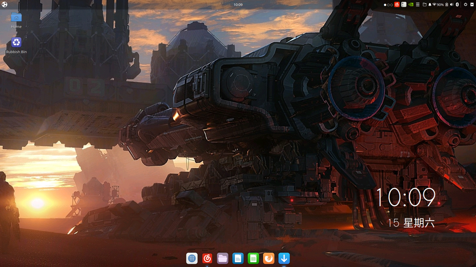
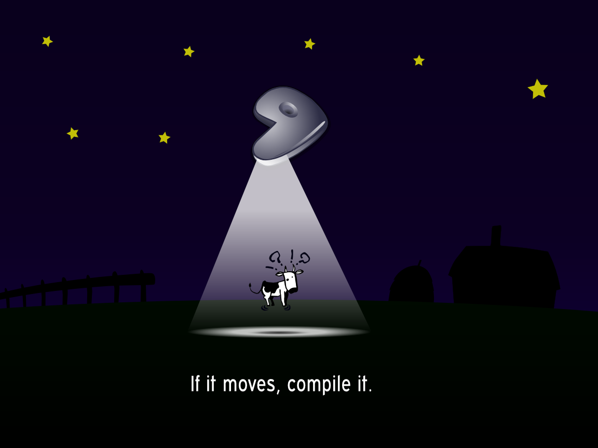
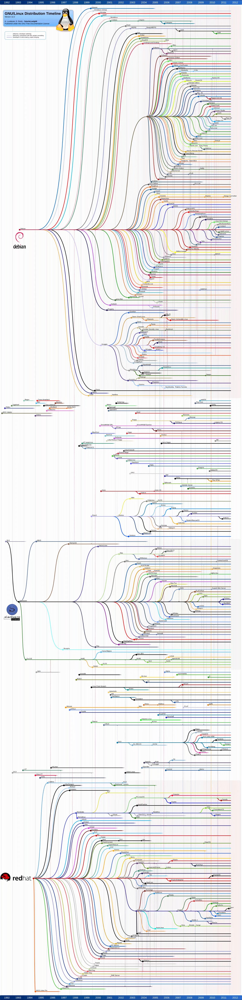

为什么要 Linux
Linux 的简介可以找度娘问问，就不赘述了。这里我们来说说 Linux 的特性。
首先 Linux 系统有 win 和 mac 无法比拟的可定制性，上到软件的表现，下到硬盘的划分都是可以修改的（也就是说，你可以制作属于你自己的 Linux 系统，也可以把你的系统优雅地粉碎 \手动滑稽）。其次 Linux 对与软件的管理有自己的一套，可以非常简单地安装、更新、卸载。如果习惯了使用 sudo apt 指令来控制软件（Linux 里习惯用 package 也就是包而不是软件来形容），你会发现你操作计算机的速度变快了。因为省去了鼠标的活动，你可以把想做的事情告诉电脑，让电脑帮你完成，而不是你自己去完成。因此，在开发人员和效率至上的人眼中，Linux 是有魔力的。

除此之外，Linux 在学生群体中也是非常受欢迎的。Linux 的发行版系统一般是遵循 GNU 协议的，属于类 Unix 开源系统，这赋予了这个系统新的特点：底层源代码可以被随意修改。在看到 Linux 在学生手中，尤其是喜欢瞎鼓捣的学生手中的魔改版本之后，说 Linux 是一个寓教娱乐的玩具也不为过。
但相对的有好处也就有坏处，Linux 的安装属实劝退。怎么说呢，只有求知欲强的人才能装好 Linux。安装时会有很多很多从来没有听说过的计算机词汇，像是 EFI 系统分区、EXT4 分区格式、第三方非 GNU 软件协议、修改下载源和各种软件名称。每一个遇到的新词都需要用一个负责任的态度学会，弄懂这个新的东西有什么用。每一次学习都会丰富你对 Linux 的知识储备，提高你成功安装 Linux 的几率。这个过程需要耐心，需要好奇心，需要作记录的好习惯。
注：这里的安装不是说走完系统安装引导就算OK了，需要在系统的易用性和性能上做到一定的提升，达到解放硬件潜力的目的才算成功得安装了 Linux。
Linux 为什么仅仅只占全球系统数不到2%的原因肯定不只是我上面说的这一点。整体来看，除去少数几个比较成熟的发行版，Linux 系统的美工和易用性非常差劲，尤其是在包的依赖这个问题上面，非常容易出现打不开、卡死或者报错的情况。因此挑选一个适合自己的 Linux 发行版也是重中之重。这个过程非常耗时，每一个系统都有自己的特色，很难割舍。你甚至可能会喜欢一个系统到甘愿付出自己的时间和精力优化它，使它成为唯一。但是一般情况是你一直在作无用工，就像笔者一样，优化了半天发现某某优化方式不适合当前的系统（呜呜呜，一定不要乱搞啊）。虽然是无用工，但也是宝贵的经历，丰富了你在处理 Linux 报错时的阅历。
废话少说，让我们进入正题，来聊聊我和 Linux 之间的爱恨情仇。
一切都是从一则假新闻开始的
有的时候公众号上的新闻真的是有故意炒作的情况。正当美国限制抖音和微信时候，这些个媒体就开始说微软修改了那个什么什么协议，加了一条什么什么，为XXX做准备，搞得人心惶惶。我当然是不信这个，但人毕竟是群居动物（编辑加：找借口，石锤了），在这样的情景下免不得会去思考未来，为可能的最坏情况做打算。就这样笔者开始思考 Linux 作为主要开发系统的优势，开始做 Win 转 Linux 的计划了。
从一个已经使用非常熟练的系统迁移到另外起一个是非常复杂的。对于开发人员尤是如此，多样的开发环境安装，针对性的加速配置以及对变化后的开发习惯的适应等等一大堆事情。“太麻烦，做个计划吧；奥利给，干就完事了” 我当时好像是这么想的。计划就不列出来了，毕竟是个挺自由的计划，中途随着眼界变宽修改了好几次。
趁着还没有开始大篇幅的说技术的事情，我真的想吐槽一句：为什么要在我已经把我的 2004 版本的 Windows 10 Pro 卸载得干干净净时告诉我微软并没有狠下心来断绝和中国的关系啊啊啊！我也是被自己蠢笑了。要不是结局还算完满，我定要把那几个辣鸡公众号给抛出来，让大家瞅瞅。假新闻害人呀。炒作也不行！辟谣的文章在这里有一篇，感兴趣的可以自己搜一下。
我才不用 Ubuntu 呢，国产系统赛高
怎么说呢，我是个爱国的人，虽然有的时候很幼稚，但的确是在用我的方式爱国。国产系统很早很早就已经被炒上天了，包括来自武汉的Deepin和华为的鸿蒙系统。我约摸着反正这次是因为外国的政策导致的问题，这次就用国内的吧。既然决定了国产系统，那一定要提一下 Ukylin (U麒麟) 这小家伙很有来头，背后有工信部和国防科技大学的大力支持。我在旧电脑上装过一次，感觉还行，速度比 Win XP 强那么一丢丢。这次在新电脑上装，应该也能有很不错的表现吧。很明显这是个死亡 Flag ，不出所料，Ukylin 给我整了不少事儿。
Poor Ukylin
咱先来说说 Ukylin 的出身，Ukylin 从名字就能看出他和 Ubuntu 应该是有联系的。U麒麟系统，全称Ubuntu-麒麟，属于基于 Ubuntu 开源系统的 Linux 发行版。所以说U麒麟是 Ubuntu 的小儿子也不为过。不过这一定是最烦人的小儿子，Ukylin 为了提高易用性然后降低国人的学习新系统的成本，把桌面环境改成和 Win 10 非常类似的模样。你一定会说，多好呀，这样就会有更多人用了吧。但是，改得好也行啊，你放个放个半成品出来是打算让用户做小白鼠吗 (当然咱们不排除吸引大佬参与系统的完善，毕竟是开源系统)。Linux 的操作习惯本来就和 Win 不同，把 Win 硬搬进 Linux 肯定会有很多障碍。这么说吧，混合使用终端和应用商店肯定比不上只使用应用商店或者只使用终端。
所以说因为咱们小麒麟还不够成熟，无法做到只使用应用商店的程度，这种混合的风格很容易劝退一般的 Linux (准确说是 Ubuntu) 用户。我就是被劝退的一个，我习惯了在终端直接敲指令，不太喜欢系统被弄得花里胡哨的。作为一个追求简洁的人，我下意识就去把所有的 Ukylin 自带的东西卸光了，然后结果就是，炸了。依赖关系可能被我搞乱了，很多东西都开始报错卡顿，刚开始是 Ctrl+Alt+T 这个快捷键没法用，后来连键盘都失灵了。所以经验 Get：千万不要胡乱卸载包，更不要胡乱修改系统配置好的文件，当然巨佬随意。
与 Budgie 系统相遇
俗话说得好，靠脸也是可以吃饭的。之前提到的小麒麟就是一种，官网和系统都非常漂亮，已经是很出色的现代美术风格了。这里提到的 Budgie 小不点也是一样，是个很漂亮的系统。Budgie 是鹦鹉的意思，这个系统的标也是只小鸟，那就叫它小鸟吧。小鸟和小麒麟可不一样，这是 Ubuntu 的亲儿子，曾被放在 Ubuntu 官网的发行版选择界面最显眼的地方。就这一点就已经很能体现 Bugie 小系统有不凡之处了。Bugie 官方说这是一个现代化的系统，包括桌面的布局，动态效果和很多贴心的官方插件。其他也没有什么值得说的了，都是些老生常谈的话，感兴趣的可以上官网瞅瞅。
来试试 Budgie 吧
果断把已经被我搞混乱的 Ukylin 换成了 Budgie 以后，我真的被 Budgie 惊到了。怪不得说 Budgie 有不输苹果电脑桌面的美工。但是又不仅仅局限于美工，翻看了 Budgie 的一些配置文件，可以说 Budgie 的本质就是一个美化到了极致的 Ubuntu 系统。我约摸着修改这个系统应该不会再遇到之前的问题吧，然后把 Snap 应用商店卸掉了。没出问题 (对不起让你失望了\手动滑稽)。看来之前出问题的原因只能是 Ukylin 对 Ubuntu 进行了魔改呢。

这没有 QQ 啊
我是个离不了 QQ 的人，毕竟收发文件还是 QQ 好用。腾讯官方的 Linux 版 QQ 无法支持我的需求，那就是个聊天发图片的工具，于是我把目光转向了 Deepin (之前提过一次的国产系统) Wine 虚拟机版的 QQ。虽然 Linux 是个很注重包依赖关系的系统，但是因为 Deepin 也是基于 Ubuntu 的系统，和我的小 Budgie 血缘关系很近 (刚开始我是这么以为的)，我觉得他们应该可以兼容。就这样我跃跃欲试得按照网上给出的方法开始安装这个 QQ。不成想，刚做到程序安装那一步，他给我报错说包的依赖无法解决。感觉 BGM 直接起来了：小朋友你是不是有很多问号。之后我试了很多方法，包括把软件源换回官方源，添加 Deepin 的一些源，更换一些包的版本，尝试 Test 测试源。反正我把我会的方法都用了个遍，怎么说呢，这就叫黔驴技穷。后来我查了一下，发现 Deepin 很早就不是基于 Ubuntu 的了，改成了基于 Ubuntu 的老爹 Debian 系统的了。跳级了？！！怪不得 Deepin 给人的感觉都不太一样呢。GG，没戏，因为在这个阶段，QQ 在我的感觉里还是刚需，所以小 Budgie 系统也不太适合我吧。
Deepin 冲冲冲
既然已经知道了 Deepin 这个系统不简单，而且安装的流程已经掌握了，那咱就试试 Deepin 系统吧。抱着这样的心情，我又阴沟里翻了船，真的不能大意啊啊啊！我习惯用 Rufus 这个软件做安装盘，没有用 Deepin 官方的安装盘制作软件，安装盘制作失败了。这系统怎么做个安装盘都这么矫情呢，之前哪个系统我需要官方的安装盘制作软件了，我做个安装盘容易吗我，干等半小时。一顿披荆斩棘过后，我终于把 Deepin 安装上了，虽然中间偷了点懒，没有设置\home分区，但最后的结果依然很令人满意。光是开机界面，就美哭我了，一种完全和 Ubuntu 系的系统不同的风格，可以说是深度 (deep) 定制了。之后试了一段时间，给人的感觉应该叫做妖艳，有点像小麒麟长大该有的模样。但是呢，我之前也有说到过，Linux 应用商店的模式我是着实不喜欢，所以整体的使用体验并不是很好。当然还有就是因为没有很多的社区支持和对我的英式硬件的超差支持，我最终还是放弃了漂漂亮亮的 Deepin。
最后也没有找到比较好的图片，不过大概就是这个样子。
debian, archlinux or gentoo
好了，故事差不多接近尾声了，这里咱来唠唠 Linux 的家族。最有流行的当然是基于 Debian 的 Ubuntu，排行榜上也是榜首，同时也是最多人用的 Linux 系统。在服务器端最常用的是红帽系统，主打稳定性。然后登场的是在技术圈大名鼎鼎的 archlinux 和 gentoo (这里排名不分先后) ，两个滚动更新的大佬级别系统。这里的大佬有两层意思，第一层就是系统本身非常强大，第二层就是不是大佬玩不转这些系统。archlinux 的包管理要比 Debian 的apt包管理自由一些，装啥都能装上，还能给你把系统装废了，具体的我也不说了，我接触的也不多。如果说 archlinux 追求的是可定制性，那么 gentoo 追求的就是极致的性能了。注意是极致的性能，换言之，如果你知道你的系统以后要做什么事情，你可以从 gentoo 的最最底层开始进行针对性的配置优化。因此，gentoo 这个系统可以做任何事情。

gentoo 系统从入门到放弃
我不是大佬，我还在成为大佬的路上，gentoo 系统就很好的让我认清了这个现实。我第一次装 gentoo 还是几个月前在一台04年的老电脑上，最后的结果就是装了4次，全部失败了。老话说得好，你学会了某个系统，就用那个系统吧，但如果你学会了 gentoo 你就学会了 Linux 的全部。gentoo 的安装真的不是跟着官方说明 (Wiki) 一步步走就能成功的。gentoo 的哲学是选择，安装的每一步都是在选择，错一步就会跌入深渊 (不排除笔者还很菜，才疏学浅，应对不了 gentoo 的安装工作)。在新电脑上安装 gentoo 就停留在了进入安装盘这一步，因为我发现，在旧电脑那个 x86 内核上安装系统的方法和我的新电脑完全不同，之前的经验几乎没有用了。放弃，果断放弃，虽然 gentoo 的极致性能真的很吸引人，但是我这个电脑还要用呢，实在没那个空钻研 gentoo。未来有机会再说吧，逃走。
出来吧 budgie， 就决定是你了
最后我决定 budgie 了，虽然没有 QQ，但是我可以慢慢适应用蓝牙和云盘这类东西来替代嘛，完美。接下来就是系统的优化环节。说是优化其实也没有几步，就是改改配置的事儿。不过最扎心的是那第一步，系统更新时带来的网速问题。要说中国的 Ubuntu 用户最糟心的是什么，那一定是网速，详细一点就是官方源在国外，国内的的速度慢得要死。如果仅仅是把官方源改成国内镜像站这么简单的事情，我也不会拿出来讲，关键是我这个 budgie 吧，它用的人太少了，很多系统相关的包在国内镜像站找不到，更别谈升级了。那我也只能是退一步，先用官方源升级系统，然后再转回国内源喽。
Ohhhhhhhhh, 主人公出场
计划很简单，实施起来着实糟心，真实体验了一下什么叫做慢。远远不到 1Kb 的速度，下个东西下一晚上。行吧，你慢就慢吧，能下完也行啊，但问题是他这，中途还会断线，需要人工重连。我整个人都不好了，虽然我写了一个脚本可以免去人工重连里这人工两个字，但也是感觉很烦，可能焦虑更合适。就在我一筹莫展得在 KFC 吃炸鸡的时候，救世主出现了，KFC-Free-Net 在我最困难的时候给我送来了 100Kb 每秒的网络。虽然你说这速度也不快，但是在体验了真正的蜗牛网速之后的我的感觉里，这 100Kb 真的太给力了，可能是久旱逢甘露的感觉。我之后又来了 KFC 一趟，安装另一个只有官方源才有的包，再次证明我的发现是正确的，Ubuntu 的官方源用我家旁边的 KFC 的网会快很多。现在回想起来真的有一种莫名的喜感。
结束语
为什么肯德基的网会比家里的好那么一丢丢呢，说真的，我也不是很清楚，是因为比较稳定？为什么我会遇到这样戏剧性的事情呢？这可能是神的领域，交给命运解释去吧。不管怎么说，结局是圆满的，我现在的 Budgie 系统作为主力开发本而言非常给力，而且有一种不经历风雨怎么会见到彩虹的实感。看到这里，读者可能会想去试试 Linux，也可能会觉得枯燥无味继续使用 Win 或者 Mac ，但是在文章的结尾我还是想说一句：系统就是个系统，没有必要去为了什么幼稚的目的像我一样去改系统，从一个已经用得非常熟练的系统迁移到 Linux 是很不划算的。最后的最后废话一句，2020吃冰激凌，在这不太平的一年做些不简单的事儿。
我们来看看 Linux 的家谱
